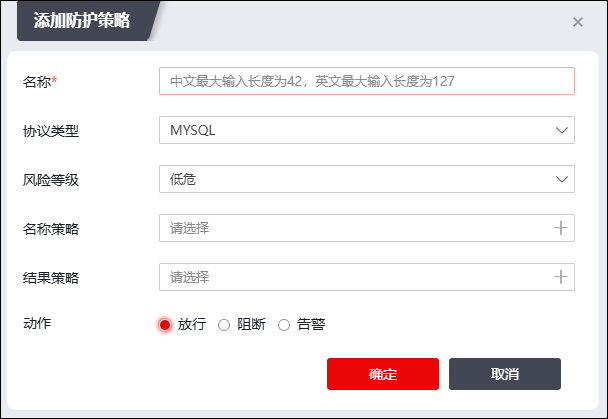

NGFW支持配置数据库防护策略，用于保护数据库安全。NGFW支持三种数据库防护模式，分别为黑名单、白名单和灰名单模式。
l黑名单：默认放行所有数据，仅阻断符合已配置策略的数据包。
l白名单：默认阻断所有数据，仅放行符合已配置策略的数据包。
l灰名单：无默认规则，根据管理员配置策略和自学习策略进行阻断/放行/告警。
配置防护策略的具体操作如下：
| 步骤1 | 选择 ，激活“数据库防护”下的“防护策略”页签，如下图所示。界面上方可以切换防护模式（黑名单/白名单/灰名单）。 |
点击“添加”，弹出窗口界面如下图所示。

在添加防护策略时，各项参数的具体说明如下图所示。
参数 |
说明 |
|---|---|
名称 |
必填项，设置防护策略名称。 |
协议类型 |
在下拉框选择防护策略针对的协议类型。 |
风险等级 |
选择防护策略针对的风险等级，可选项：低危、中危和高危。 |
名称策略 |
选择本条防护策略引用的名称策略，关于名称策略的配置请参见 名称策略。 |
结果策略 |
选择本条防护策略引用的结果策略，关于结果策略的配置请参见 结果策略。 |
动作 |
选择NGFW对符合以上配置的数据包的操作，可选项：放行、阻断和告警。 Ø放行：NGFW对符合以上要求的数据包直接放行。 Ø阻断：NGFW对符合以上要求的数据包进行阻断。 Ø告警：NGFW对符合以上要求的数据包放行后产生告警信息。 |
配置完成后，点击【确定】保存相关配置。
| 步骤2 | 生成访问控制策略 |
防护策略分为两类，分别为自学习类策略和管理员类策略，其中管理员类策略指的是手动下发的策略，自学习类策略是 防护自学习模块下发过来的策略。针对于自学习类策略，NGFW支持根据策略内容生成访问控制策略进一步保护数据库。
选中“策略类型”为“自学习”的策略，再点击“访问控制生成”，会根据自学习策略内容生成一条访问控制策略，点击【确定】可以保存访问控制策略。